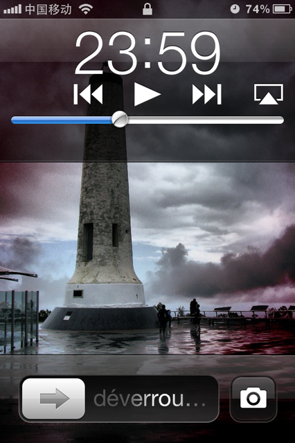

Wed, 29 Jun 2011 18:26:00 · Apple · Fail · iOS5 · iPhone · iOS · UI · UX
10 Things I Don't Love About iOS 5 (Beta)
I always love iOS and all Apple products, period. Heck I can’t even recall how many times my friends told me that I should work for Apple seeing how fiercely I am when it comes to championing their products. And to date, I’ve never experience any bad trips… until I decided to upgrade to iOS 5 Beta. I (should) know not to set the bar too high when it comes to anything labeled as Beta, but then again this is Apple so things can’t be that bad, right? Oh how wrong I was!
Now, I’m not sure why so many people raves about the recent iOS 5 Beta without mentioning any glitches or complaints (good for them!), but if you really use your iPhone the way I do (more than just a tool to send text or play game), then I’m sure you’d feel my pain too. So here’s couple of issues, glitches and frustrations that I experience on my first day using iOS 5 Beta on iPhone 4:
1. Calendar
Very buggy to the point that it’s really annoying (think of throwing your phone to the wall kind of annoying). Unresponsive tap, frequent crashes, and there’s still no multiple delete feature that allows you to remove multiple items in one go. Not only that, one has to tap the modify button more than once and have to be VERY precise as to where to land your finger, because otherwise this action would just take you back to the previous page! Try and try again, and the calendar would eventually quit on you.
2. Messages
The input field would magically disappear sometimes and there’s no way to bring it back unless you quit the app (by pressing the X button when you double click the Home Button below), and restart. I also don’t love the new green coloured Send button. Sending images (MMS) via message also doesn’t work. I hope this is not a bug but simply a feature that is not included in the BETA, because otherwise this oversight just suck big time. – I guess that’s why What'sApp Messenger rocks!
3. Kiosk
Why can’t I hide this app and put it in a folder? I admit that perhaps I’m a bit OCD and anything that I can’t organize, arrange or customize the way I like it really bugs the heck out of me. Seriously Apple you gotta let us have a bit of freedom organizing our own phone!
4. Reminder
First of all, tacky icon. Second, inputing reminder task is a painful process that took more than one step of action; type in the to do list > hit enter > then if you wish to modify the time/details/etc. (which of course you do else is just a to do list with no specific timing/reminder!), you’d be taken to the next page. Think of how convenient this task would be if everything can be done on a single screen. I don’t see the advantage of using this compare to regular Calendar reminder or any other existing to do list app. Or perchance, I should just use the plain ol’ paper note!
5. Folder Management
I think it’s about time Apple let us put more than just 12 apps in one folder. Really what’s the hold up? It simply defeats the purpose of having a folder if one can only do so much with it. I hope this would be improved in the final version.
6. User Interface
Not in love with the new On/Off rounded button. Not only that it’s much tinier than it needs to be (can’t imagine my Dad’s big thumb navigating on it!), but the overall UI look and feel probably take a long time to get use to. I have longer negative list about this, but I should probably restrain myself here.
7. Sound Alert
Ah… still unable to customize SMS alert using different tones other than the default ones, eh? Seriously, enough with the control freak limitation, let us use whatever ringtones we like… this isn’t 1984!
8. Alarm
You would think this should be something that Apple would notice and fix in the first place, but nope… nothing change and I still can’t set an alarm that goes off multiple times in a single action. For example: I need to set a reminder to ‘Drink Some Water’ every 3 hours (long story!) every day, but I can’t just do that easily. Instead I have to painstakingly create a single alarm for specific time and that means I have to repeat the same task multiple times to set different timing for each reminder.
9. Default App Removal
I hope in the final version we would be 'allowed’ to remove the Stock ticker, You Tube, or any other default apps that comes with the iOS installation.
And I’m saving the best and probably the worst for last…
10. Camera Access on Locked Screen 
This, by far, is the most convenient but also the BIGGEST security flaw! Why? Because while it is indeed handy to be able to access your camera without the hassle of entering your passcode, it also means that anyone who gets a hold of your iPhone could easily bypass your access code without even breaking a sweat! How? Allow me to illustrate:
- Double click the home button will enable the camera icon (appears next to the unlock bar)
- Tap it to activate the camera, snap some pix, or not.
- Close the camera and you’re on the homepage of your iPhone…. voila!
Now where’s that passcode that is suppose to 'protect’ your iPhone from unauthorized access? IMHO, once you’re done snapping some photos and close the Camera app, it should then go back to the locked screen, but for some reasons this feature doesn’t work on me.
That said, I really want to like iOS 5 but having experienced all those glitches on my first day using the Beta version sort of dampen my expectation. But me being the optimist, let’s hope that there’s more to iOS 5 than meets the eyes, yeah?